NHF szépségverseny 2014
A 2014-es évfolyam · 2015.02.18 · Frissítve: 2015.02.15
A 2014-es nagy házik: a beküldött szép megoldások galériája a készítők által küldött leírásokkal.
1Arnócz László
A játék célja, hogy meghatározott időn belül minél több egeret csapjunk le. A sajton lévő lyukak száma folyamatosan nő, valamint az egerek is egyre gyorsabban bukkannak fel. Életünk folyamatosan fogy, és a rossz találatok miatt is veszíthetünk belőle. Ezt sikeresen irányzott kattintásokkal tudjuk visszaszerezni.
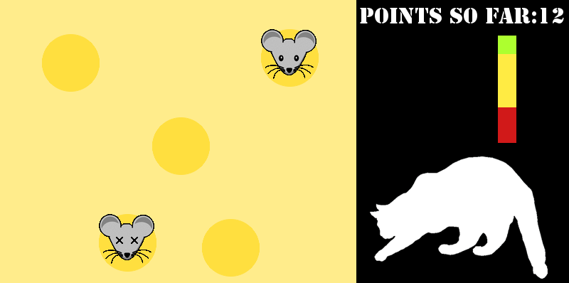2Bakó Benjamin
A program alapötlete egy régi telefonos játékon alapul. Dobozok esnek fentről egyesével és játékos feladata, hogy a kis szellem alakú karakterrel a dobozokat tologatva minél feljebb jusson. A karakter egy doboz magasságba feltud ugrani. Minden belépő dobozért egy pontot kap a player. A játék véget ér ha a játékosra egy doboz esik vagy ha beszorul. Tovább fejleszthető még rengeteg kis aprósággal ami nagyban javítaná a játék élményt (pl.:avatar választás, robbanó doboz, tetris szerűen minden teli sor eltűnik...).
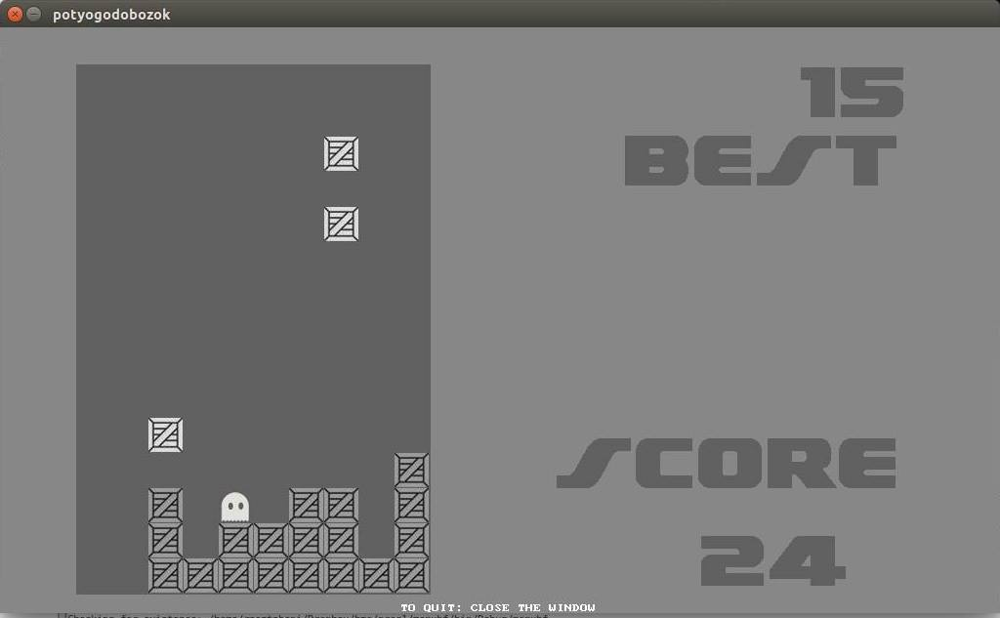3Borbély László
A játék egy teljesen standard Snake, annyi változtatással, hogy az InfoC baglyot kell benne megenni.
(Értjük a célzást... – a szerk.)
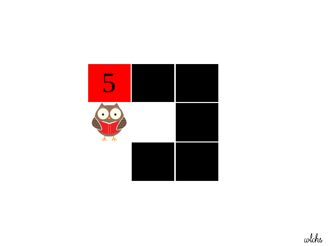4Cziffra Edvárd
A S.W.I.N.E. (2001-ben kiadott) játékhoz készítettem egy pálya szerkesztő programot. Meg lehet vele nyitni a *.scene pályákat, a tereptárgyak hely és irány koordinátáit lehet vele módosítani és a változtatásokat elmenteni. A szerkesztéshez mind az egeret, egér görgőt illetve billentyűzetet lehet használni. Hibás pálya fájl esetén jelzi a hiba okát, néhány tipikus hibát (Pl.: elírt tereptárgy darabszám a fájlban) ki is tud javítani.
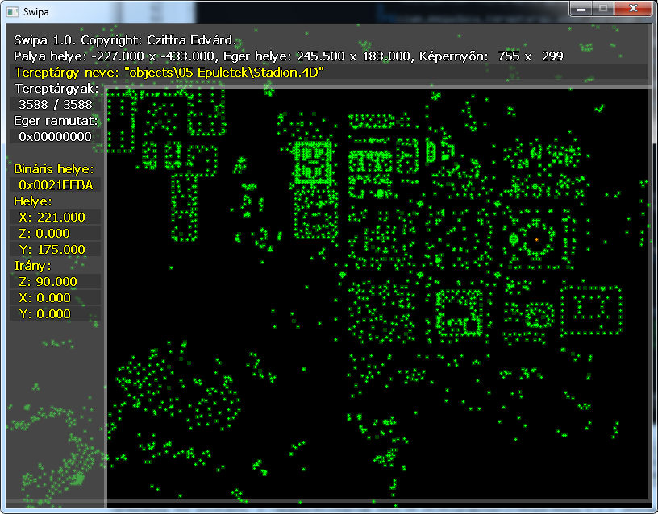5Czövek Márton
A KonvexBurok program arra való, mint ahogy a neve is mutatja, hogy meghatározza ponthalmazok konvex burkát. Matematikai definíciója ennek, hogy azon konvex ponthalmazok metszete, amelyek az összes pontot tartalmazzák. Tulajdonképpen azt jelenti, hogy melyik az a legkisebb konvex doboz, amibe az összes pont belefér. Érdekessége, hogy míg ezt mi emberek ránézésre egyből látjuk, gondolkodás nélkül meg tudjuk mondani, hogy melyikek a legszélső pontok, addig a számítógép csak nehezen tud vele mit kezdeni, hiszen nem tud „ránézni”. A program azt demonstrálja, hogy mit tud kezdeni egy számítógép vele, animációval mutatja be, hogyan tudja megkeresni ezt a burkot.
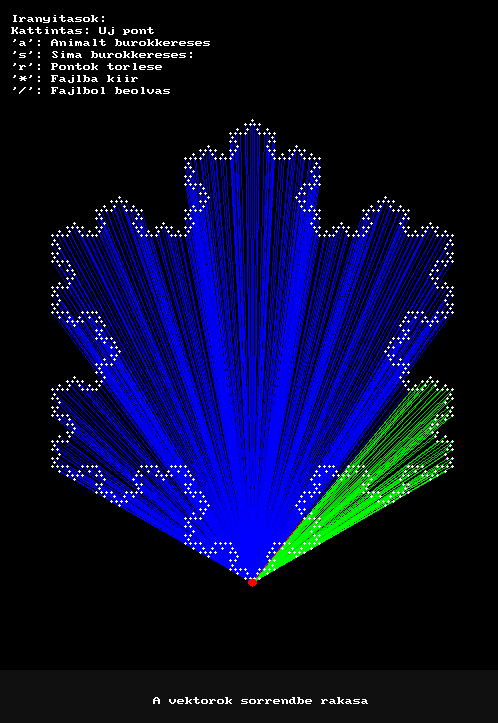6Csányi Marcell Péter
A választott házim, a Sokoban nevű játék. Végtelenül egyszerű szabállyal, told a ládákat a kijelölt helyre. Mégis némelyik szintet nagyon nehéz megoldani, a pálya kialakításának köszönhetően. Mindenkinek csak ajánlani tudom, hogy próbálja ki.
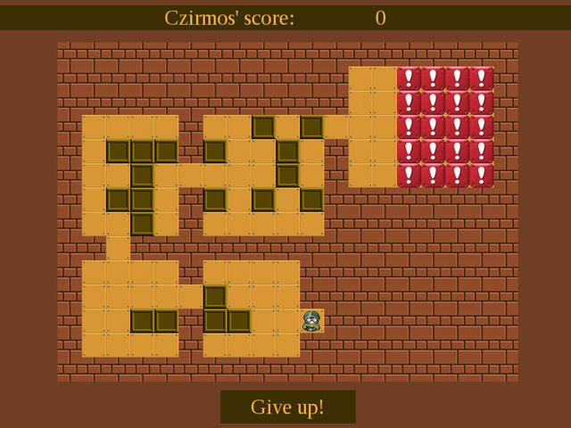7Dauner Ágoston
Az én játékom az 1972-es PONG játék egy felújított verziója. A minimalista dizájn és a két játékos mód maradt. Kicsit színesebb lett, került bele számítógépes ellenfél és eredményjelző tabella. Raktam bele még egy nehezített módot, amiben a képen is látható módon egy akadály nehezíti a labda tovább adását, ez az akadály 3 másodpercenként változtatja a helyét teljesen tetszőlegesen.
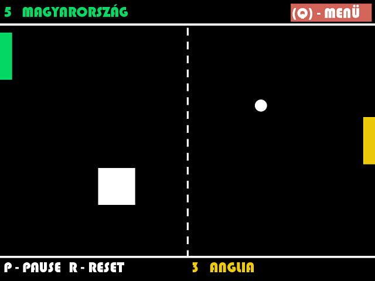8Déri Tamás
A programom egy határidőnaplót valósít meg grafikus felhasználói felülettel, amihez a GTK+ könyvtárat hívtam segítségül. Új események hozzáadásán kívül lehet a korábbiakat módosítani, illetve törölni is. Lehetővé teszi a címkézést, így nemcsak dátum (hónap/hét/nap) szerint vagy kereséssel, hanem címke alapján is lehet szűrni az események halmazát. A program kiírja az egyes eseményekig hátralévő időt. Használatával nem feledkezünk meg egy ZH-ról sem, bár elalvás ellen (még) nem véd.
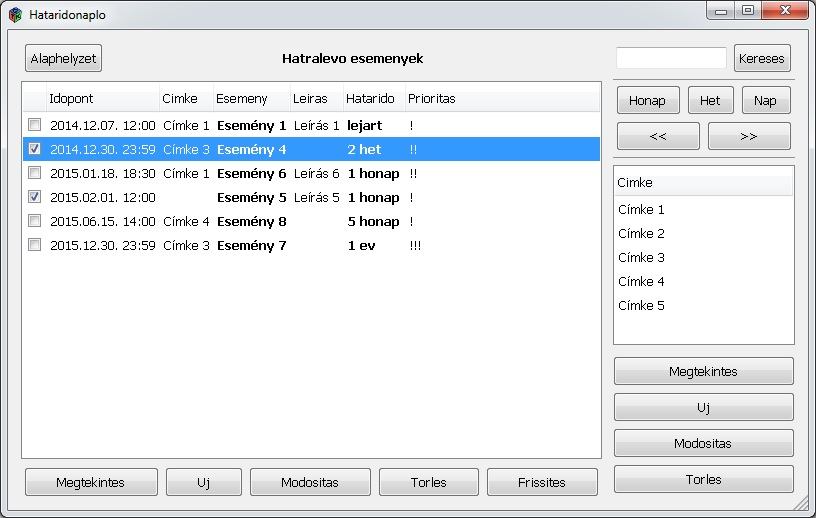9Dobra Gábor
Emlékszel, mivel játszottál a régi szép időkben, amikor nem volt internet? Jó eséllyel a válaszod az Aknakereső - Flipper - Pasziánsz trió valamelyike. Ezt a feelinget igyekszik életre kelteni a Minesweeper, ami játékmenetében, tökéletesen megegyezik a Windows XP-s Aknakeresővel, az összes eredeti funkció (és csalás ;) ) újra életre kel. A kinézete majdnem tökéletes mása az eredetinek, csak a Menü és a Legjobb idők jelenik meg újragondolt felületen. (A háttér nem a játék, hanem a feeling része.)
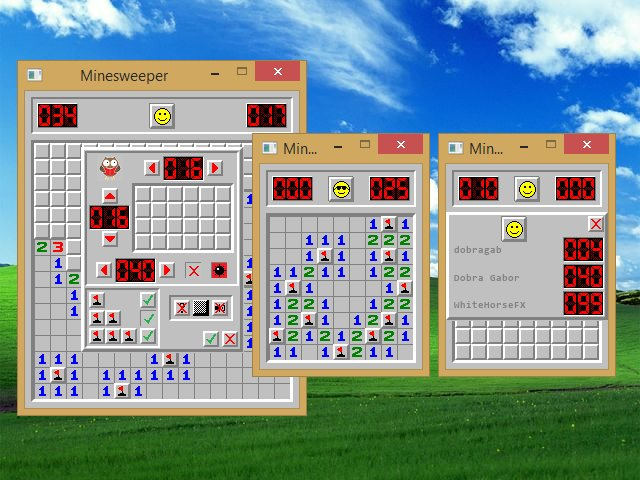10Falvai Olivér
Már korábban is hallottam a Conway's Game of Life játékról, ezért amikor megláttam a nagyházi kiírást, és hogy lehet ilyet választani, nem volt kérdés mit fogok csinálni. Maga a program elég egyszerű: lehet kattintással rajzolni a pályára, aztán csak el kell indítani a szimulációt. Lehet még random állapotot generálni, törölni, pályaméretet állítani.
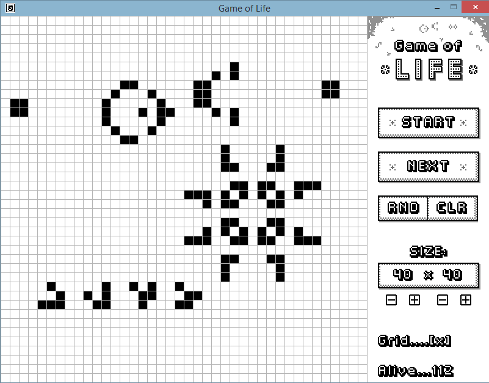11Kopári Ádám
A hagyományos snake játék karakteresebb változata consoleban. Grafikailag nem túl nagy szám, de zenél. A játék célja a különböző bogyók megevése, miközben nem megyünk se magunknak se a falnak. Játszható egy- és kétjátékos módban, különböző pályákon.
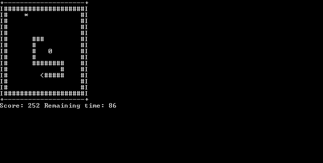12Kormány Zsolt
A játékban egy figurával ládákat kell tologatni a képernyőn; úgy, hogy azok a megfelelő helyre kerüljenek. A pálya viszont olyan, hogy könnyű betolni olyan helyre a ládákat, ahonnan már elmozdítani nem lehet őket. Amennyiben kevés lépésből teljesíted az adott pályát, akkor felkerülhetsz a dicsőséglistára. Véleményem szerint az egyik legjobb funkciója, hogy saját pályát is készíthetsz és betöltheted azt a játékba, így megunhatatlan a játék.
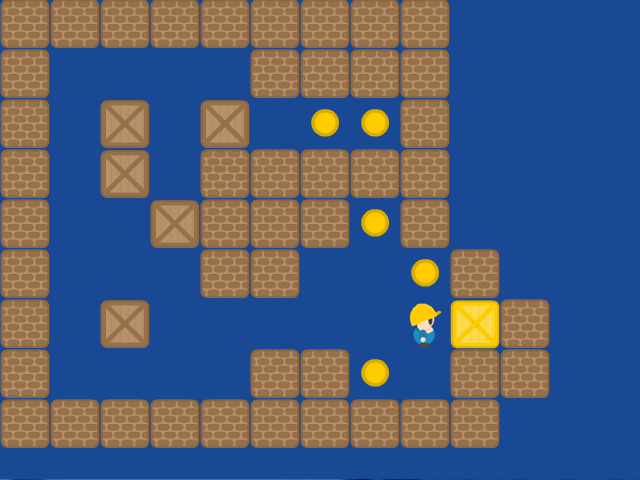13Kovács Benedek
A már jól ismert kígyós játék falakkal, kétjátékos móddal és választható pályákkal. A cukorka és a kígyók képei természetesen saját készítésűek.
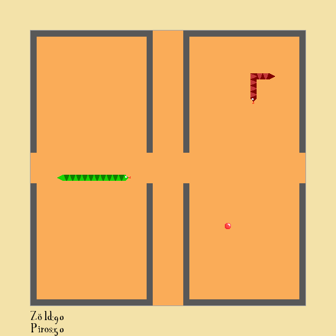14Kovács István
A programom egy klasszikus Blackjack megvalósítása virtuális formában. A grafika megalkotásához a Windows-os text-képernyő lehetőségeit használtam ki. A GUI, illetve a kártyák kirajzolásához az ASCII tábla speciális karaktereit hívtam segítségül. Nyilakkal vezérelhető menürendszert hoztam létre, amibe a főmenü mellett a játék közben megjelenő pop-up ablakok is beletartoznak. A főmenüben a felhasználó számos lehetőség közül választhat a játék mellett: akár elolvashatja a szabályokat, vagy megtekintheti a korábbi 5 legjobb eredményét is, amit dátummal és névvel együtt tárol a program.
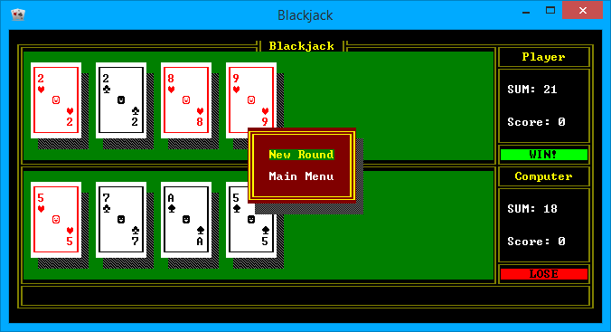15Kovács-Egri Kristóf
A "SNAKE: THE GAME" nevű játékot írtam meg, amelynek Single Player és Multi Player funkciója is van. Mindkettőn belül választhatunk Easy, Normal és Hard nehézségi fokot, amelyek által változik a kígyó gyorsasága és így a játék nehézsége is. A játék menüje irányítható billentyűzettel és egérrel. A cél az, hogy a kígyó minél nagyobb score-t érjen el, anélkül, hogy a falnak, magának, vagy Multi Playerben az ellenfelének menjen. A legjobb 20 highscore-t a játék elmenti csökkenő sorrendben, így bármikor összehasonlíthatjuk az általunk elérttel. A játék alatt zene fut, ami a hangulatot biztosítja, leáll, ha vége a játéknak és ezt még egy "Game Over" hang is jelzi.
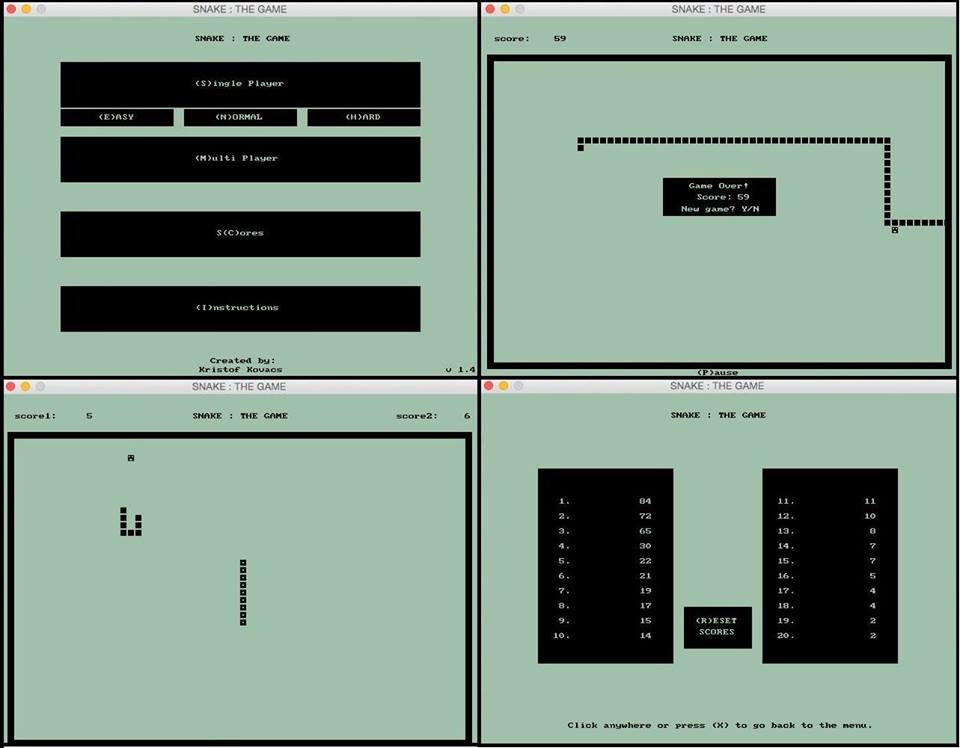16Musa Bence
Igazából a kép magáért beszél, Stewievel és Ruperttel a dobozokat a helyére kell tologatni!
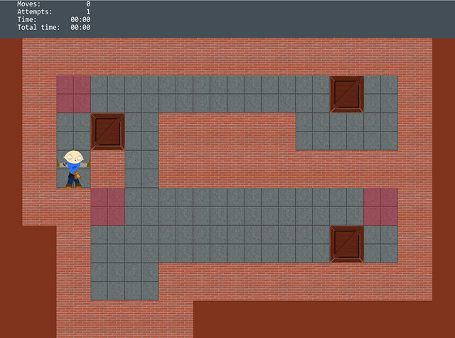17Rabinovics Jakov
Ez a program lényegében a klasszikus amőba játék vagy más néven gomoku. A programban lehet gép ellen játszani vagy egy másik ember ellen. A program az X-ket és O-kat animációval rajzolja ki. Lehet állítani tetszőleges méretű pályát, és a játékot el lehet menteni.
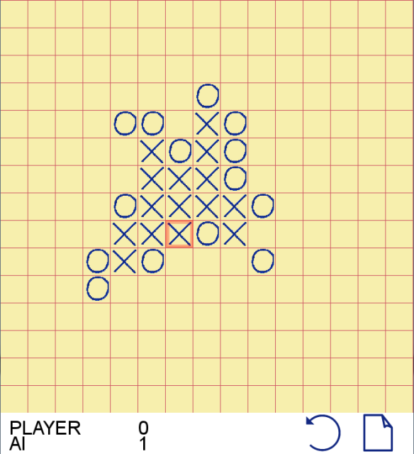18Romhányi Ágoston
Amőba.
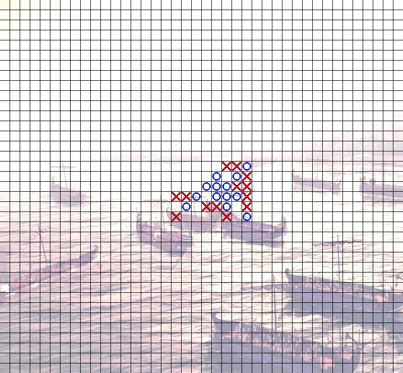19Rostás Balázs
Én egy életjáték szimulátort hoztam létre, ahol meghatározott pályaméreteken lehet tetszőleges alakzatokat létrehozni, majd lefuttatni rajtuk a szimulációt. Úgy oldottam meg, mintha a négyzetrács egy vászon lenne, amire rá lehet rajzolni az élő cellákat, illetve ki lehet őket úgymond radírozni. Ezért megpróbáltam egy Mona Lisára valamennyire hasonlító rajzot elkészíteni, és hát a képen látható módon sikerült.
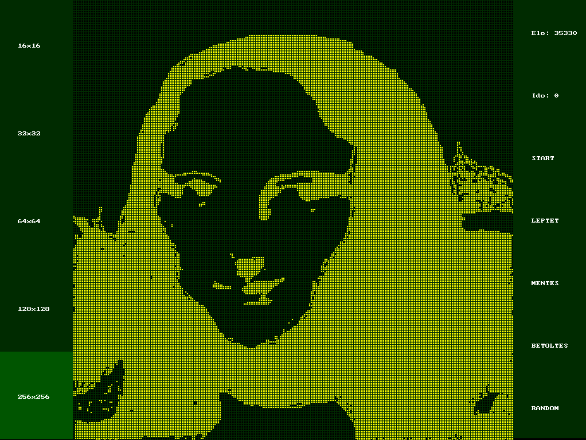20Solymos Gyula
Az általam készített kígyós játékban van lehetőség egy- és kétszemélyes módra is, a játékban több, egyre nehezedő, egyre több falat tartalmazó pálya van. A cél minél több almát gyűjteni, amitől a kukac hossza nő, a pontszámot ez adja. Kétszemélyes játék esetén a végén a hosszabb kukaccal rendelkező nyer. Az elért eredményeket a játék tárolja, és a legjobb 10 felkerül a dicsőség listára is.
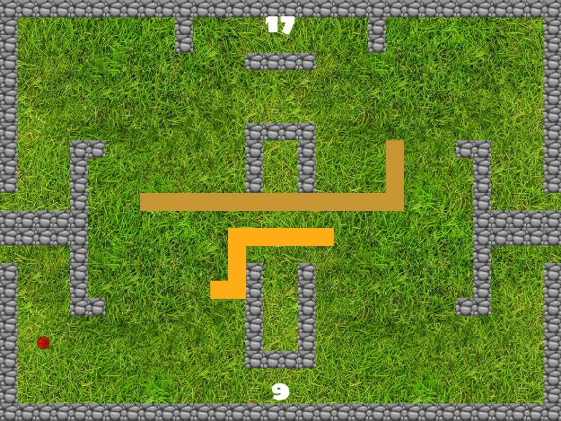21Szabó Dorottya
A programom SDL-lel készült és a klasszikus snake szabályai szerint működik. A játék célja az, hogy a kígyó minél több gyümölcsöt szedjen fel a pályáról, anélkül, hogy a falnak vagy saját magának ütközne. Öt megevett gyümölcsönként a kígyó gyorsul, ezzel nehezítve a játékot. A kígyó a nyilakkal irányítható.
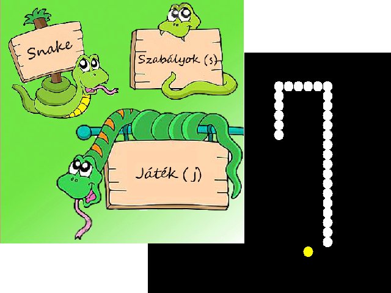22Szalay Tamás
Az én választott házim a nagy klasszikus snake game. A program főmenüjéből válaszható az egy- és kétjátékos mód, megtekinthetjük a billentyűzetkiosztást, a dicsőségtáblát vagy kiléphetünk. Az eredeti snake-től egy dologban tér el, egyszerre több étel is megjelenhet a játéktéren. A kígyók a nyilakkal és a wasd gombokkal irányíthatóak. Játék közben valós időben láthatjuk a pontjainkat. A grafikát SDL-el valósítottam meg.
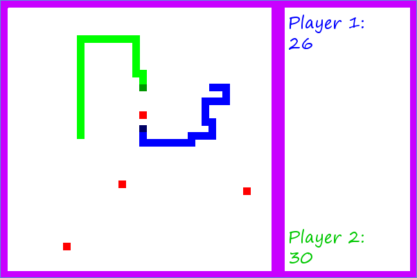23Tóth András
Klasszikus tetris, nem klasszikus környezetben.
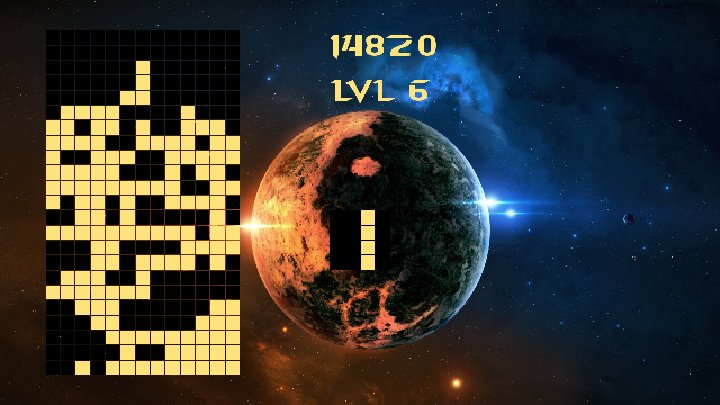24Tóth Nikolett
A házim egy hagyományos menüvezérelt Tetris játék, SDL-ben elkészítve. A menüből a játékon kívül is elérhető a ranglista, amely tartalmazza a 10 legjobb pontszámot elért felhasználó nevét és pontszámát, illetve a beállításokon keresztül tudjuk változtatni a pálya szélességét és magasságát. A játékban egy párbeszédablakon keresztül láthatóak a soron következő blokkok, szüneteltetés esetén is itt ajánlja fel a program a további lehetőségeket, illetve itt adhatjuk meg a játék végén a becenevünket, amellyel el szeretnénk menteni a pontszámunkat.
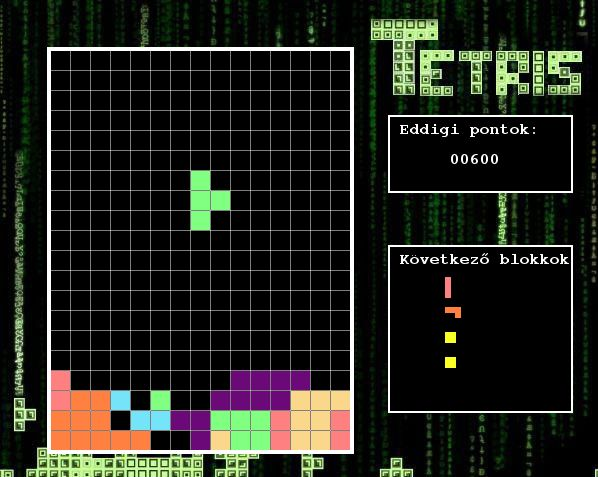25Vincze Zsolt
A programom az ismert Bejeweld játékot valósítja meg. A játék lényege, hogy a játékos mindig egy-egy szomszédos elemet cserélhet ki, de csak akkor, ha úgy kialakul legalább három egyszínű egymás melletti elem. (Ha több mint három kerül egy ilyen mozdulatnál egymás mellé, akkor speciális elemek alakulnak ki.) Ilyenkor a kövek eltűnnek, és a felette lévő kövek a helyükre esnek, majd új véletlenszerű elemek esnek be felülről. A játék célja egy perc alatt a lehető legtöbb pontot összegyűjteni. Ha elég gyorsan játszunk, tehát legalább 1,5 mp-enként eltüntetünk valamit, akkor bónuszt ad a program, ami plusz pont, és az elemek beesési sebessége és eltűnési sebessége is folyamatosan növekszik. Ha nem sikerül 1,5 mp alatt jó lépést találnunk akkor a bónusz lenullázódik. Szintén lenullázódik hogy ha segítséget kérünk. A játékban lehet profilt létrehozni és törölni, illetve van toplista mellyel összehasonlíthatjuk eredményünket a többi játékoséval.
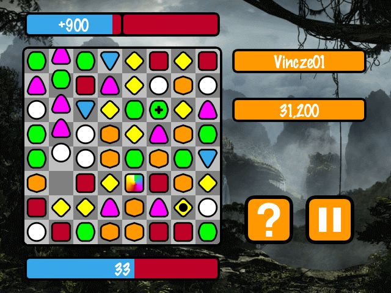26Wéber Ádám
Az én nagyházim egy hagyományos space shooter retró grafikával. Az űrhajónkkal ahogy megyünk előre a szinteken, egyre több és egyre gyorsabb ellenfél jön szembe, a cél, hogy a játékos minél többet kilőjön közülük, és azok ne ütközzenek az űrhajóba. A 10-es a max szint, ha addig el tudja vinni a játékos anélkül hogy meghalna, nincs más hátra mint megpróbálni megdönteni a saját rekordját. Ha tudja. Irányítani a billentyűzeten lévő nyilakkal lehet (x és y irányba is) illetve két fajta lövedékkel lehet lőni az ellenséget és mindkettőnek más tulajdonságai vannak. A játékhoz tartozik hasonlóan retro stílusú grafikus menü és endscreen.
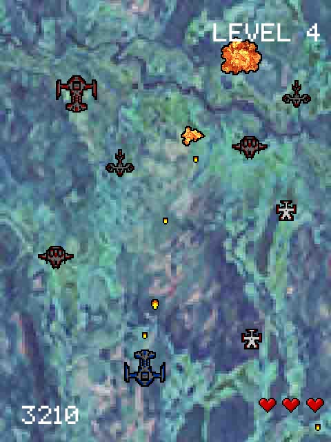27Wildanger Martin
A Snake nevű programot készítettem el SDL segítségével. Az egész program billentyűzettel vezérelhető. A játék célja az étkek felszedése - és ezáltal a pontszám növelése - úgy, hogy közben a kígyó sem a falnak, sem magának nem ütközik. Ha a játékos elég pontot szerez, felkerülhet a dicsőséglistára.
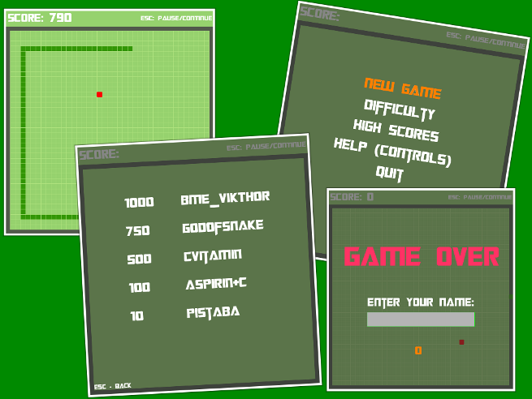